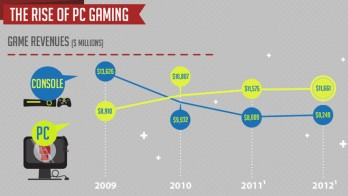

Welcome to my gaming webite

My name is Kameron Wagner and this is my CIS184 project. The subject for this website bloomed from my love for gaming. Games allow me to immerse myself in a different worlds ranging from real world to fantasy. They are my self-subscribed therapy when the real world becomes too much.
There are many different types of games that are popular today. Everything from RPGs, MMO-RPGs, and FPSs being only a few of the popular gaming types. While there are many different types of games available, there are also different platforms in which to play those games. The two main console power houses are Microsft, which created the Xbox-One and Sony, which designed and created the PS4.
There are a couple other consoles available, but don't have the reputation or game diversity that Microsoft and Sony have. There also exists the PC gaming realm. While there are some games that are only available on console, the same can be said about PC games. As far as overall quality of gameplay goes, PC has the upper hand in every aspect. From the quality of graphics, to the processing speed of gameplay. One fundamental problem with console is that the processing ability will never rival that of the PC. I have the Xbox-One, PS4 and a gaming PC which I built myself to cover all the bases.
Due to the reason stated above, the PC gaming revenue is surpassing the console gaming as shown in the graph to the right. Games are becoming much so complex and intricate that the consoles can't compete with the PCs abilities.
The rest of the site will give you some insight on my two favorite types of games listed in the nav menu above. I will also provide some videos of some of the most popular games today.